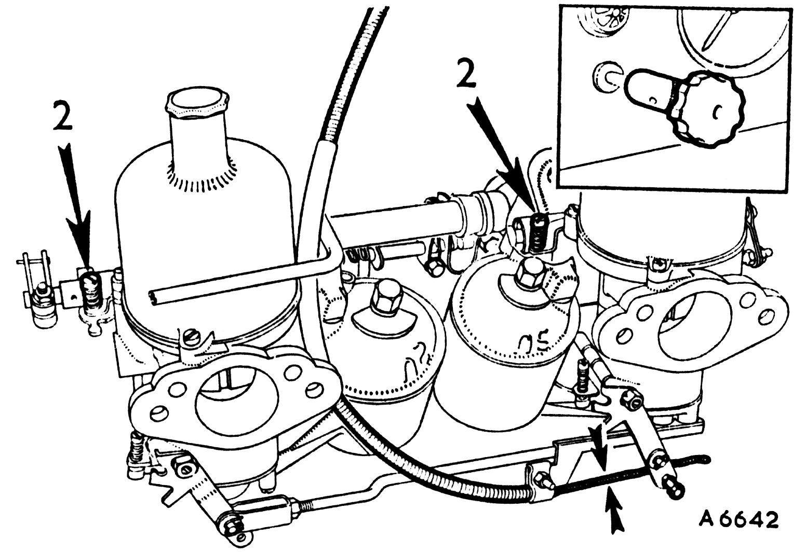
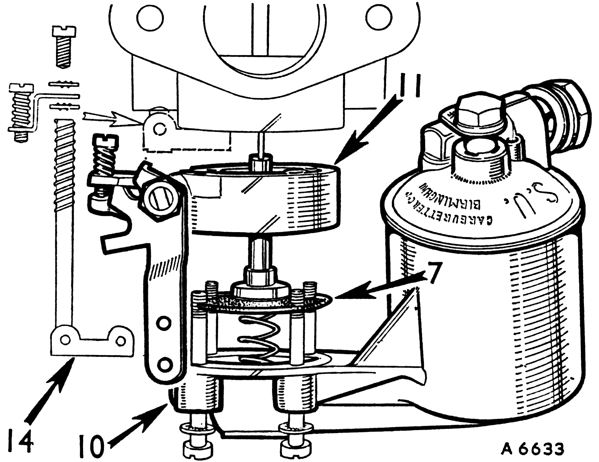
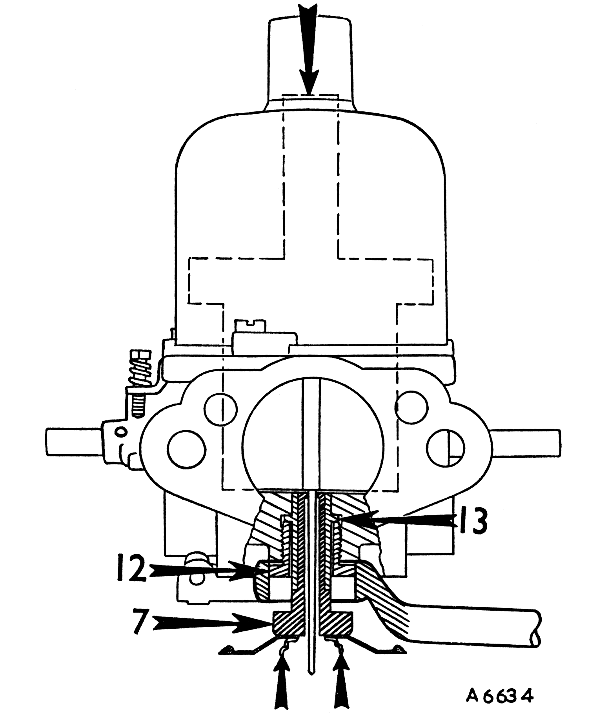
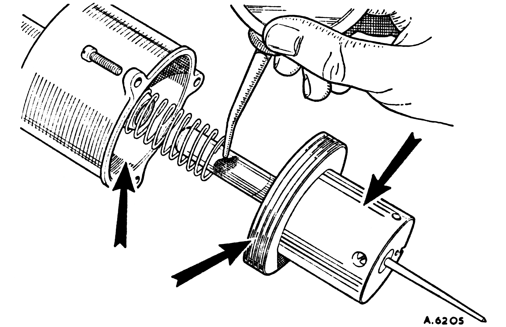

Tuning multi-carburetters (continued)

14
- Reconnect the mixture control wire with about 1/16 in. (2 mm.) free movement before it starts to pull on the jet levers.
- Pull the mixture control knob until the linkage is about to move the carburetter jet operating arms, and adjust the fast idle screws (2) to give an engine speed of about 1,000 r.p.m. when hot.
- Return the control knob and check that there is a small clearance between the fast idle screws and the throttle stops.
- Refit the air cleaners.
Note
When an auxiliary (thermo) carburetter is fitted refer to Service Sheet No. AUC 9796.
Adjusting and Servicing
Jet centring
15
The piston should fall freely onto the carburetter bridge with a click when the lifting pin is released with the jet in the 'fully up' position. If it will only do this with the jet lowered then the jet unit requires re-centring. This is done as follows:

16
- Mark the position of the let housing and float-chamber in relation to the carburetter body for reassembly.
- Remove the plate retaining screw and withdraw the cam rod assembly (14).
- Unscrew and remove the float-chamber securing screws.
- Remove the float-chamber (10) and the jet housing (11) and release the jet assembly (7).
|
|

17
- Slacken the jet locking nut (12), using a ring spanner, until the jet bearing (13) is just free to move.
- Remove the piston damper, hold the jet (7) in the 'fully up' position, and apply light pressure to the top of the piston rod.
Tighten the jet locking nut (12).
- Check again as in item 15 and ensure that the jet moves down the bearing freely.
- Reassemble, ensuring that the jet and diaphragm are kept to the same angular position and that the beaded edge of the diaphragm is located in the housing groove.
- Refill the piston damper with oil (see item 8.).
Cleaning

18
- Remove the piston/suction chamber unit.
- Using a petrol-moistened cloth, clean the inside bore of the suction chamber and the two diameters of the piston.
- Lightly oil the piston rod only and reassemble.
|